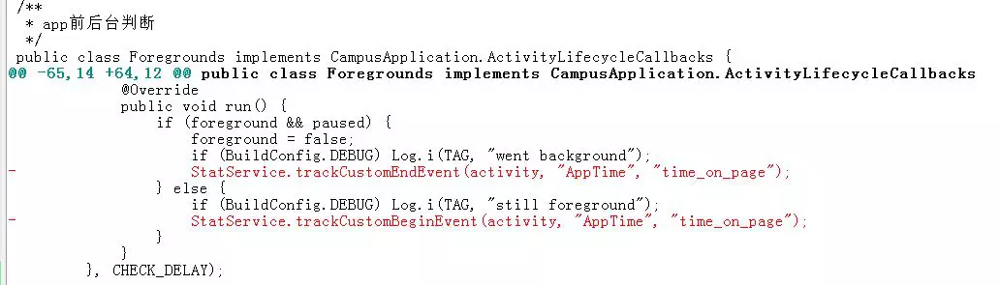
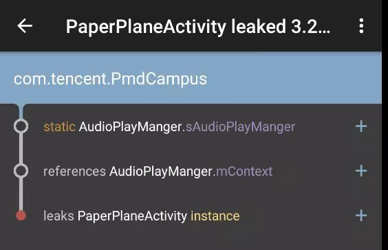
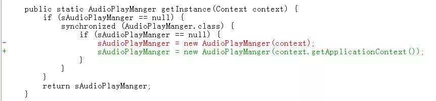
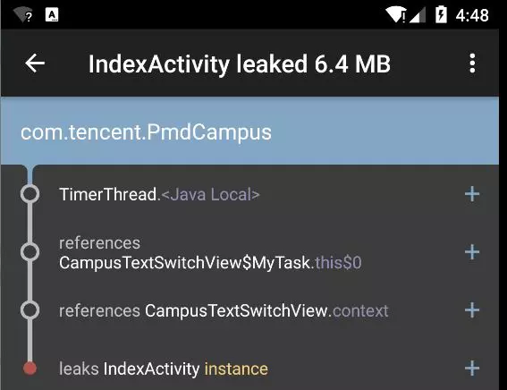

Android应用中很容易出现内存泄漏，而泄漏的主要原因归根结底是应用组件生命周期方法处理不当。本文使用LeakCanary分析了几个内存泄露的例子，记录如下。
Context泄露
例一

分析
Foregrounds用于记录app前后台切换Foregrounds调用MTA SDK的StatService.trackCustomEndEvent()方法进行事件统计
我们将一个activity实例作为参数传给StatService.trackCustomEndEvent()方法，结果MTA SDK内部持有这个activity的引用，导致activity无法释放。
安全的调用方式如下：
1 | StatService.trackCustomEndEvent( |
不过从业务上来讲这段统计代码没有意义，所以干脆去掉。
例二


分析
这个例子跟前一个类似，也是Context相关的问题。
AudioPlayManger是单例AudioPlayManger.getInstance()的参数是Context
如果不小心将activity实例作为Context参数，这个activity将无法释放。很不幸，方法调用方太容易犯这种错误了。
同上，安全的做法是不要直接使用context对象，而是context.getApplicationContext()。
线程泄露


分析
- 继承自
TextSwitcher实现了自定义控件用于文本轮播效果，代码中使用了Timer以及TimerTask - Timer会启动新的线程
自定义控件中没有考虑到退出activity时中止Timer相关线程，导致activity泄露。
Handler机制相较Timer更优雅些，不必启动新的线程自然也就没有停止线程的问题。可以用Handler替换Timer以避免线程导致activity泄露的问题，不过仍然要注意中止消息以停止这里的轮播效果。
一个好的参考例子是android.widget.ViewFlipper，ViewFlipper是在onDetachedFromWindow()方法中停止消息更新的。我们可以借鉴这种处理方式。